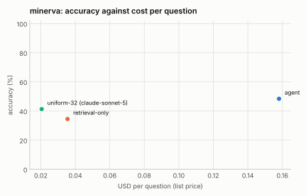

MINERVA: 25% stratified sample (seed 1)¶
Generated 2026-09-13 by eval/report.py from 3 run file(s). Accuracy is exact match on the option letter; intervals are 95% Wilson. Costs are provider list prices per question; indexing cost is not included for the index-based configurations.

| Configuration | n | accuracy | 95% CI | unparsed | cost / q | tokens / q | tool calls / q | latency p50 | latency p95 | no-decode | citation in range |
|---|---|---|---|---|---|---|---|---|---|---|---|
| agent | 310 | 48.4% | 42.9–53.9 | 46 | $0.158 | 42,640 | 4.45 | 24.1 s | 61.7 s | 14% | — |
| retrieval-only | 310 | 34.5% | 29.4–40.0 | 30 | $0.036 | 9,093 | 1.15 | 11.2 s | 33.0 s | 100% | — |
| uniform-32 (claude-sonnet-5) | 310 | 41.3% | 35.9–46.8 | 35 | $0.021 | 5,802 | 0.00 | 13.7 s | 22.7 s | 100% | — |
Accuracy by task type¶
| Task type | agent | retrieval-only | uniform-32 (claude-sonnet-5) |
|---|---|---|---|
| Cause and Effect | 36% (n=11) | 64% (n=11) | 45% (n=11) |
| Counterfactual | 12% (n=8) | 0% (n=8) | 25% (n=8) |
| Counting | 33% (n=63) | 21% (n=63) | 30% (n=63) |
| Event Occurence | 44% (n=45) | 38% (n=45) | 38% (n=45) |
| Goal Reasoning | 67% (n=3) | 67% (n=3) | 33% (n=3) |
| Listening | 62% (n=32) | 50% (n=32) | 62% (n=32) |
| Numerical Reasoning | 50% (n=12) | 25% (n=12) | 33% (n=12) |
| Object Recognition | 64% (n=56) | 41% (n=56) | 54% (n=56) |
| Reading | 69% (n=29) | 34% (n=29) | 41% (n=29) |
| Situational Awareness | 57% (n=7) | 57% (n=7) | 29% (n=7) |
| Spatial Perception | 36% (n=11) | 27% (n=11) | 27% (n=11) |
| State Changes | 67% (n=3) | 0% (n=3) | 67% (n=3) |
| Temporal Reasoning | 33% (n=30) | 30% (n=30) | 37% (n=30) |
Tool-call profiles¶
agent: search > search > view ×35; view ×22; search > view ×12; search > search > view > view > view > view ×10; search > search ×10; search > search > view > view ×9; view > view ×7; search > search > get_transcript > view ×4
retrieval-only: search ×310
uniform-32 (claude-sonnet-5): (none) ×310
Runs¶
- agent:
/data/videoindex/eval/runs/minerva-f0.25-s1-agent.json— {"benchmark": "minerva", "policy": "agent", "budget_usd": 0.5, "budget_tokens": 120000, "max_tool_calls": 6, "sample": 323, "fraction": 0.25, "seed": 1, "skipped_not_indexed": 13, "vi_version": "vi 0.1.0", "started": "2026-09-13T20:01:43Z"} - retrieval-only:
/data/videoindex/eval/runs/minerva-f0.25-s1-retrieval-only.json— {"benchmark": "minerva", "policy": "retrieval-only", "budget_usd": 0.5, "budget_tokens": 120000, "max_tool_calls": 6, "sample": 323, "fraction": 0.25, "seed": 1, "skipped_not_indexed": 13, "vi_version": "vi 0.1.0", "started": "2026-09-13T20:49:28Z"} - uniform-32 (claude-sonnet-5):
/data/videoindex/eval/runs/minerva-f0.25-s1-uniform-32.json— {"benchmark": "minerva", "policy": "uniform-32", "model": "claude-sonnet-5", "frames": 32, "transcript": true, "sample": 323, "fraction": 0.25, "seed": 1, "started": "2026-09-13T21:06:31Z"}
Questions per run: up to 310. Benchmark videos are public YouTube content and may be in model training data; read per-configuration deltas rather than absolute scores.